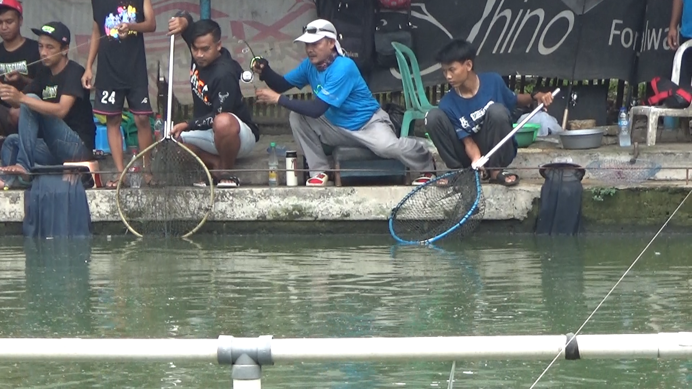

Pemancingan CS101 feat MMFC: Persaingan Panas, Induk & Total Ekor Meledak
.png) Suasana lomba mancing-CS Joglo (Foto: Republik Mancing)
Suasana lomba mancing-CS Joglo (Foto: Republik Mancing)
Gelaran Pemancingan CS101 feat MMFC kembali menjadi pusat perhatian dunia pemancingan setelah digelar pada Sabtu, 12 April 2025. Dengan format 40 lapak 1 joran, acara ini berlangsung panas sejak awal dan dipadati pemancing dari berbagai daerah.
🎫 Tiket & Sistem Lomba
- Tiket Utama: Rp 4.500.000
- Bonling 12 amplop: Rp 500.000 (Rp 1.500.000 / amplop)
- Tiket Komplit: Rp 5.000.000
- Executive (opsional): Rp 1.000.000
- Induk Terberat: Rp 300.000
- Total Ekor Ramai: Rp 300.000
- Induk Terbanyak: Rp 200.000
- Merah Ikan Ramai: Rp 200.000
🐟 Pelepasan Ikan
- Ikan Rame: 1.200 kg
- Ikan Induk: 100 kg
Total pelepasan mencapai 1.300 kg, menciptakan arena pertarungan yang penuh aksi dan persaingan ketat di tiap lapak.
 Moment strike babon- Om Deni Palem (Foto: Republik Mancing)🏆 Hadiah & Pembagian Poin
Juara Induk
- 1. Rp 28.500.000 + Executive 10.800.000 = Rp 39.300.000
- 2. Rp 17.000.000
- 3. Rp 8.500.000
- 4. Rp 5.000.000
Poin Induk
- A: Rp 4.500.000 + Executive 7.200.000 = Rp 11.700.000
- B: Rp 4.500.000
Poin Ikan Kuning
- A: Rp 4.500.000 + 7.200.000 = Rp 11.700.000
- B: Rp 4.500.000
Total Ekor Ikan Rame
- A1: Rp 14.000.000 + Executive 10.800.000 = Rp 24.800.000
- A2: Rp 5.000.000
- B1: Rp 14.000.000
- B2: Rp 5.000.000
 Moment strike babon- Om Bayu Segoro (Foto: Republik Mancing)
Moment strike babon- Om Bayu Segoro (Foto: Republik Mancing)
📌 Nominasi Juara
- Induk 1: Om Ipink (Lapak 03) — 5,77 kg
- Induk 2: Baikale (Lapak 32) — 5,69 kg
- Induk 3: Putri Jaya (Lapak 25) — 5,66 kg
- Induk 4: Indik Indik (Lapak 12) — 5,65 kg
Poin Kategori
- Poin Induk Tunggal: Indik Indik (Lapak 12) — 4 ekor
- Total B1: Joki Bekas — 389 ekor
- Total B2: Kopi Manis — 380 ekor
🎽 Fasilitas Peserta
Semua peserta memperoleh T-Shirt edisi CS101 x MMFC (1 pcs per lapak) sebagai bentuk apresiasi dari panitia. Selain itu tersedia fasilitas umum seperti konsumsi dan area istirahat.
⚠️ Peraturan Resmi
- Maksimal 3 rangkaian mata kail
- Hanya diperbolehkan menggunakan 1 joran
- Dilarang melempar umpan/boman sebelum lomba dimulai
- Pelanggaran dikenai sanksi: 50 ekor rame tidak masuk hitungan
- Induk pertama pelanggar tidak masuk timbangan
Dengan hadiah besar, aturan jelas, serta pelepasan ikan yang melimpah, event CS101 feat MMFC tahun ini dianggap sebagai salah satu lomba paling kompetitif dan meriah. Banyak peserta berharap acara ini berlanjut di edisi mendatang.
Komentar
Belum ada komentar. Jadilah yang pertama memberikan pengalaman mancingmu!